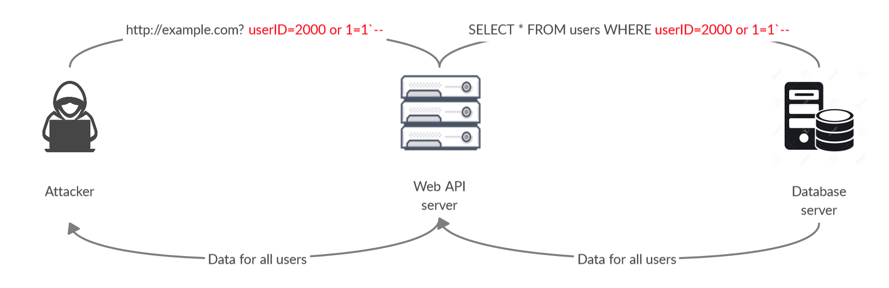

Injection flaws allow attackers to relay malicious code through an application to another system. These attacks include calls to the operating system via system calls, the use of external programs via shell commands, as well as calls to backend databases via SQL (i.e., SQL injection). Whole scripts written in Perl, Python, and other languages can be injected into poorly designed applications and executed. Any time an application uses an interpreter of any type there is a danger of introducing an injection vulnerability.
Many web applications use operating system features and external programs to perform their functions. Sendmail is probably the most frequently invoked external program, but many other programs are used as well. When a web application passes information from an HTTP request through as part of an external request, it must be carefully scrubbed. Otherwise, the attacker can inject special (meta) characters, malicious commands, or command modifiers into the information and the web application will blindly pass these on to the external system for execution.
SQL injection is a particularly widespread and dangerous form of injection. To exploit a SQL injection flaw, the attacker must find a parameter that the web application passes through to a database. By carefully embedding malicious SQL commands into the content of the parameter, the attacker can trick the web application into forwarding a malicious query to the database. These attacks are not difficult to attempt and more tools are emerging that scan for these flaws. The consequences are particularly damaging, as an attacker can obtain, corrupt, or destroy database contents.
Injection vulnerabilities can be very easy to discover and exploit, but they can also be extremely obscure. The consequences of a successful injection attack can also run the entire range of severity, from trivial to complete system compromise or destruction. In any case, the use of external calls is quite widespread, so the likelihood of an application having an injection flaw should be considered high.1